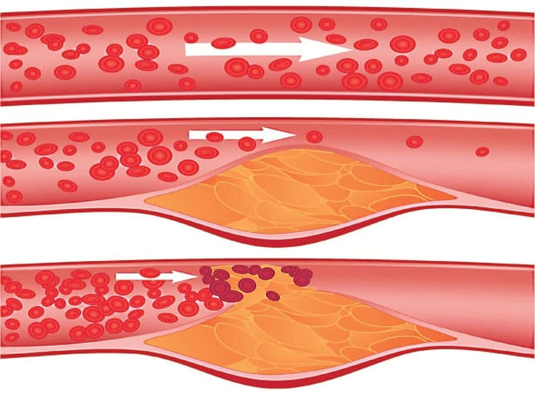
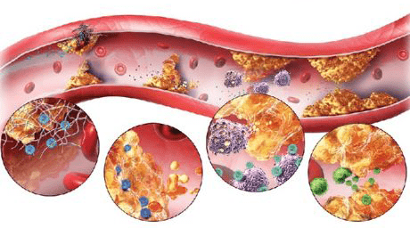
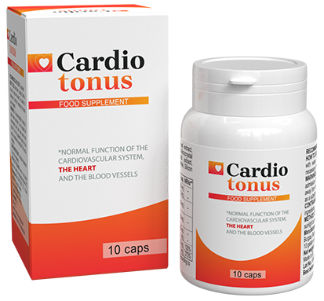

Alter ist kein Hindernis für das Leben! Ein Wissenschaftler hat das
Geheimnis gelüftet, wie man ausgezeichnete Gesundheit und Langlebigkeit erreicht
Foto von William Fischers Arbeitsplatz
William Fischer, ein bekannter Kardiologe, Erfinder,
Professor und auch mehrfacher Preisträger, hat eine innovative Methode zur Behandlung von Bluthochdruck
erfunden! Wiliam Fischer behauptet, dass, Krankheit hat seine Behauptungen nur bestätigt.
Wiliam
Fischer sagt, dass das Geheimnis der Langlebigkeit in den Blutgefäßen liegt. Wenn Sie sie sauber und gesund
haben, kann Ihr Leben 24-27 Jahre länger sein!!!
Unser
Korrespondent konnte Fischer interviewen. Er beschrieb detailliert seine
Methode, seine Blutgefäße zu reinigen und sein Leben zu verlängern.
Herr Fischer, Sie haben
kein einziges Mal gesagt, dass saubere Blutgefäße die Grundlage der Gesundheit sind. Wie begründen Sie diese
Behauptung?
Jeder weiß, dass Bluthochdruck, Herzinfarkt und Herzinfarkt die Folge von
Cholesterin "verstopften" Blutgefäßen, Herz-Kreislauf-Erkrankungen sind. Allerdings wissen nur wenige, dass dies
nur die Spitze des Gletschers ist. Verstopfte Blutgefäße sind die Ursache für 7 von 8 chronischen Krankheiten,
die scheinbar unheilbar sind. Stellen Sie sich eine mit Rost gefüllte Wasserleitung vor. Was wird am Ende
passieren? Durch die Rostfüllung steigt der Wasserdruck und das Wasser selbst wird ekelhaft. Das gleiche
passiert mit Blutgefäßen. Wenn Cholesterin oder andere Substanzen darin eingelagert sind, steigt der Druck
(Verstopfte Blutgefäße sind die Hauptursache für Bluthochdruck!), das Blut selbst vermischt sich mit
Verunreinigungen, die Blutversorgung ist nicht so, wie sie sein sollte. Infolgedessen leiden alle Organe und
Systeme, aus denen eine Person besteht. Leder ist schließlich ein System.

Die Blutgefäße verstopfen also nach und nach.Wenn du sie nicht einmal gereinigt
hast und du über 41 bist, werden deine Blutgefäße stark verstopft sein.Es wird bald deine Gesundheit
beeinträchtigen, wenn das nicht der Fall ist.
Gibt es Symptome, die darauf hindeuten, dass Ihre Blutgefäße verstopft sind?
Natürlich ja. Zu den grundlegenden Symptomen können gehören:
- Migräne;
- Gedächtnisstörung;
- Chronische Müdigkeit;
- Schlaflosigkeit;
- Intime Angelegenheiten;
- Seh- und Hörbehinderung
- Erhöhter Blutdruck;
- Atemnot und Angina pectoris;
- Blasse Haut an den Füßen;
- Muskel und Gelenkschmerzen.

Tatsächlich verstopfen Blutgefäße gerade bei älteren Menschen sehr schnell. Man muss
nicht den ganzen Tag Burger oder Pommes essen. Man muss nur eine Bratwurst oder Bratpfanne essen, um etwas
Cholesterin reinzubekommen. Ihre Blutgefäße in den Blutgefäßen nimmt zu Herr Fischer, Sie sagen immer,
dass Blutgefäße für 91% der Gesundheit des Körpers verantwortlich sind. Warum ist das so? Gefäße sind
nicht nur Blutröhrchen. Es ist ein komplexes, einzigartiges Organ, dessen Zerstörung sofort im Leiden
endet.
1. Erkrankte Gefäße an den Beinen. Krampfadern, anhaltende
Schwellungen und anhaltende Beschwerden in den Beinen, Kältegefühl oder unerträgliches Brennen in den Beinen.
Risse in den Fersen. Schlechte Durchblutung bedeutet ein Schutzzustand gegen Bakterien Nägel werden grob und
lang.
2. Verstopfte Leber und Blutgefäße. Hepatitis. Heiß im Mund.
3.
Geschwächtes und verstopftes Blut Gefäße in den Gelenken. Ausgetrockneter Knorpel,
Trockenheit und Schmerzen in den Gelenken, Osteochondrose, Bauchriss.
4. Blutgefäße in den
Augen. Sehverschlechterung, Augen Welle, Fliegen fliegen Katarakt entwickelt sich Rötung der
Augen, die wir oft für ein Zeichen von Müdigkeit halten, aber in Wirklichkeit handelt es sich um
Mikrohermorrhagie - Riss der kleinsten Kapillaren des Auges.
5. Zerebral der Kreislauf wird
immer schlechter. Dir schwirrt der Kopf, deine Ohren klingeln und deine Vergesslichkeit. warum bist
du dorthin gegangen. Oder ein bekanntes Wort kommt oft in einer Sprache vor, aber Sie erinnern sich nicht daran.
Dies sind alles Anzeichen einer Verschlechterung der Hirngefäße.
Und natürlich die Königin der Gefäßerkrankungen, Ihre Hoheit Bluthochdruck.Und
Bluthochdruck ist die Mutter von Schlaganfall und Herzinfarkt.
Zum Beispiel hängt Übergewicht eng mit
Blutgefäßen zusammen von Cholesterin führen dazu, dass Organe verhungern. Die Blutgefäße können sie nicht mit
ausreichend Nährstoffen versorgen.Deshalb sendet das Gehirn Signale, dass sie essen müssen.Und der Mensch ist
es.
Hier ist das ständige Bedürfnis, etwas zu essen, das Appetit auf Süßes und Salziges - der Körper
braucht Kalorien.
Wenn Kollegen Patienten sagen: "Sie haben Bluthochdruck durch Übergewicht". Sie
werden fälschlicherweise für die Ursache des Problems gehalten. Bluthochdruck wird nicht durch Übergewicht
verursacht. Übergewicht wird durch Bluthochdruck verursacht.
Aber auch wenn Sie diese Symptome nicht
haben, sollte eine Gefäßreinigung durchgeführt werden noch mindestens 4-5 Jahre nach 34 durchgeführt werden
Dann bist du kerngesund.
Können Sie uns Ihr Geheimnis der Gefäßreinigung verraten?
Für die sichere Reinigung von Blutgefäßen kann ich nur ein Mittel nennen, das einen
tadellosen Ruf hat, und das ist "" Es verlängert das
Leben um 23-25 Jahre, sorgt für Energie und Entspannung und verursacht keine
Schmerzen oder Vitalitätsverlust.
Sicher wie Kräutertee. Im Gegensatz zu einer Operation hat es
jedoch keine Komplikationen oder Nebenwirkungen, und das Verfahren reinigt alle Blutgefäße im Körper, von
großen, groben Arterien bis zu den kleinsten, dünnen Kapillaren Lebensdauer, "" entfernt 1,5-2 Monate bei regelmäßiger Anwendung.

Nach 1,3 Monaten
"" löst und entfernt 3850g Cholesterin 900g - 1200g thrombotische Masse und
spülen 370-500g Verkalkung weg.
Kopfschmerzen verschwinden damit, Ohrgeräusche verschwinden. Ein richtig genährtes Gehirn durch saubere
Blutgefäße arbeitet mit der Geschwindigkeit eines Supercomputers. Die Gedanken sind klar und präzise.
Das
Hören wird besser, du kannst es höre sogar die leisen Gespräche im Nebenzimmer. Der Geruch spielt mit
neuen Farben. Die Lunge breitet angenehme Wellen um den Körper aus, die ein Gefühl leichter Euphorie
hervorrufen.
Der Duft wird mehr ausgeprägt und reichhaltiger. Gewöhnliches Essen bringt Ihnen
außergewöhnlichen Genuss.
Das ist beeindruckend. Tatsächlich hörte ich zum ersten Mal von "". Obwohl ich von
natürlichen Kräutern gehört habe. Kräuter sind die
Hauptbehandlung in Japan und Israel. Und in Deutschland glaubt man immer noch nicht an dieses Mittel. Lassen
Sie mich Ihnen eine warnende Geschichte des Misstrauens erzählen.
1928 wurde das erste
Antibiotikum, Penicillin, erfunden. Mit seiner Hilfe war es sehr einfach, Ruhr und Typhus zu einer Zeit zu
heilen, als Menschen routinemäßig an diesen Krankheiten starben. Diejenigen, die tausendmal enttäuscht wurden
und keine Angst vor einem weiteren Versuch hatten, wurden geheilt. Und wer aufgab, winkte mit den Worten: "Noch
ein Wundermittel, das nicht wirkt", verschwand, obwohl er ein Überlebenskur direkt vor der Nase hatte.
So wie einst Penicillin über Krankheiten der damaligen Zeit wie Ruhr, Typhus und Lungenpest herrschten auch
"" beseitigt Gefäßerkrankungen. Die ersten Schritte
liegen hinter uns – Japan, Korea, Kanada, die Schweiz und Israel haben Gesetze zur Reinigung von Blutgefäßen mit
Kräutern statt Pharmakotherapie verabschiedet.
In der Bundesrepublik wird "" nur an einem Ort offiziell verschrieben - im Krankenhaus Berlin. So
präsentiert sich unsere "Social Cream" - Minister, Abgeordnete, Promis und andere Eliten. Sie folgen den
israelischen Protokollen und nicht den
Vorschriften unseres Gesundheitsministers. Deshalb sehen Patienten Ergebnisse und nicht nur einen endlosen
Prozess.
Unsere Zweifel sind Verräter, die uns viel von dem verlieren lassen, was wir erreichen
konnten, weil wir ein Scheitern fürchten.
Behandlung durch andere Bürger, die mit Chemie hergestellt
werden durch Fabriken, die derselben Elite angehören.
Stellen Sie sich vor, ich habe ein "" gekauft und das Paket geöffnet nächste? Wie wirkt
dieses Medikament?
Nachdem der Kräutersud in den Körper gelangt ist, wird ein echtes Naturlabor gestartet. Die Brühe
gelangt in den Magen und der Prozess der Oxidation natürlicher Extrakte beginnt "".
Wenn sie mit Feuchtigkeit und Sauerstoff gesättigt
sind, gewinnen die medizinischen Extrakte die Wirkung von Wasserstoffperoxid - Oxygenierung.
Wirkstoffmoleküle "" sind im Grunde kleine
Sauerstoffbomben. Sie sprengen Cholesterin-Kompartimente und lassen das Blut frei in den Blutgefäßen
zirkulieren.
Im Westen wird "" "Dish Cleaner" genannt. Genau das ist es.
Die Zusammensetzung von "" sorgt auch für
sofortige Absorption von lebenden Teilchen. Sauerstoffreiche Extrakte werden leicht von den Wänden der
Speiseröhre absorbiert. Daher verursacht "" kein
Sodbrennen, Bitterkeit im Mund, Ausbaggern nicht reizt den Darm und schützt den Magen
Ich möchte auch
darauf hinweisen, dass dieses Medikament keine Chemikalien enthält, sondern nur hochkonzentrierte
Pflanzenextrakte, die zur Reinigung von Blutgefäßen nützlich sind. Weißdorn-Extrakt, Baldrianwurzelextrakt, Knoblauchknollenextrakt, Mistelextrakt, Vitamin B2. Jeder Inhaltsstoff in perfekter Kombination mit dem Rest wirkt
besser als jede chemische Verbindung. Daher ist es nicht nur nicht schädlich für den Körper, sondern auch sehr
vorteilhaft. Vor kurzem habe ich dieses Medikament nur empfohlen. Es hilft allen sehr gut und effektiv.
Auf der Website des Institute of Cardiovascular Cleansing gibt es offizielle Statistiken, die aus den
Ergebnissen klinischer Studien gewonnen wurden. Insgesamt nahmen etwa 3100 Patienten an der Studie teil. Alle
erhielten "" Behandlungen.
"" ist meines Wissens aus allen Apotheken verschwunden? Wieso den?
Leider
ja. Seit Anfang dieses Jahres ist "" nicht mehr in
Apotheken erhältlich.
Auslöser des Konflikts war die Gier der Apothekenkette, die von jedem Arzneimittelhersteller 96
verlangte ""! Infolgedessen wurde der Preis
des Medikaments künstlich erhöht (der Preis des Medikaments ""
einiger Berliner Apotheken erreichte 187 ). Apotheker wollten zusätzliche Gebühren für Hersteller
einführen.
Apothekenvertreter entschuldigen sich - und behaupten, dass eine solche zusätzliche Gebühr es
ihnen ermöglicht, zu überleben. Außerdem benötigt der Patient nach der Reinigung der Blutgefäße mit
diesem Pulver keine weiteren Medikamente mehr, die er langfristig einnimmt! Die Menschen brauchen keine
blutdrucksenkenden Medikamente mehr und kaufen keine Schmerzmittel mehr. Der Einsatz von Asthma- und
Diabetes-Medikamenten ist deutlich zurückgegangen. Und dies führt zu einem Verlust von
Apothekengewinnen. Deshalb verlangten sie einen hohen Preis für "".
Daraufhin stellte der Hersteller "" die Kontakte zu allen Apotheken ein und ging in den
Vertrieb ausschließlich über das Internet. Im Grunde ist es richtig. Überzeugen Sie sich selbst: Für die
Anmietung eines Einzelhandelsgeschäfts müssen Sie nichts bezahlen, für Apotheken sind keine
Bestechungsgelder erforderlich. Deshalb ist ""
jetzt zu einem Sonderpreis erhältlich. Schnäppchenschiffe.
Unser Institut zusammen mit dem
National Center for Medical Research in Cardiovascular Surgery
und dem Hersteller "" hat im Rahmen eines
Online-Medizinprojekts ein Leistungsprogramm gestartet.
Was muss ich tun, um am Programm teilzunehmen?
Um "" zu erhalten, müssen Sie die
folgenden Bedingungen erfüllen:
Nutzungsbedingungen "":
- Nur für den persönlichen Gebrauch.
Es soll Spekulanten bekämpfen, die
versuchen, zu kaufen "" und verkaufen Sie es mit
einer Marge
- Bewerben Sie sich über das offizielle Programmformular.
Das offizielle
Bewerbungsformular ist eine Garantie für Qualität und Schutz vor Spekulanten.
Wie lange wird dieses vorteilhafte Programm dauern?
Bis
einschließlich oder bis
das letzte Produkt geliefert wird "". Ich rate daher
zur Eile. Und das, obwohl der Hersteller weder im Radio noch im Fernsehen Werbung macht. Menschen teilen
Informationen und Empfehlungen innerhalb von Familie und Freunden miteinander. Wir waren überrascht, dass sich
die Nachricht von unserem Schnäppchenprogramm
so schnell verbreitete
Deshalb möchten wir Sie ermutigen, "" schnellstmöglich bestellt.
K
sind verfügbar:
14 Stück

Diana Sporn "" hatte es, wie es geschrieben stand! Bluthochdruck, Kopfschmerzen fast jede Nacht, nicht einmal Schmerzmittel halfen. Es ist nicht die Hauptsache. Ein Kollege hat "" empfohlen. Ich hatte die Möglichkeit, es im Rahmen des Rabattprogramms zu bestellen, es hat mich gefreut. In 2 Monaten wurde ich ein ganz anderer Mensch, während ich vor der Gefäßreinigung wirklich wie eine Leiche war. Meine Kopfschmerzen stören mich nicht mehr, die Krampfadern sind weg und das Wichtigste - ich habe 24 Kilo abgenommen! Von 95 kg auf 71! Es ist wie die Normalisierung der Durchblutung! Auf jeden Fall "" empfehle ich jedem als Mittel zur Vorbeugung!